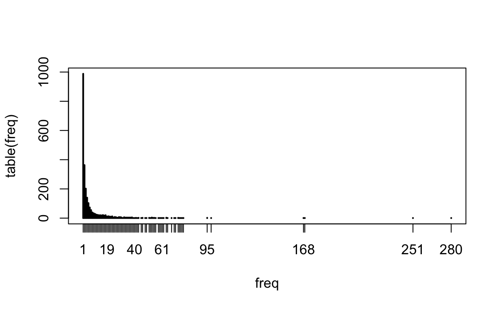
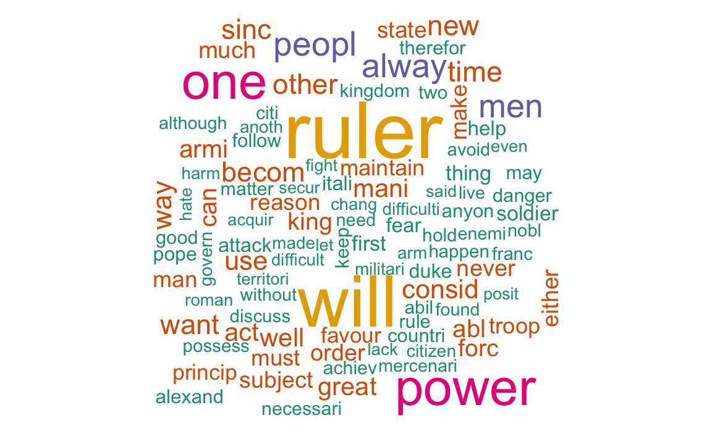

Chapter 18 Computational Text Analysis
This unit focuses on computational text analysis (or “text-as-data”). We’ll explore:
- string basics, like concatinating and subsettings.
- regular expressions, a powerful cross-language tool for working with string data.
- common tools, that take regex and apply them to real problems.
18.1 Preprocessing a Corpus
First let’s load our required packages.
library(tm) # Framework for text mining
#> Loading required package: NLP
#>
#> Attaching package: 'NLP'
#> The following object is masked from 'package:httr':
#>
#> content
#> The following object is masked from 'package:ggplot2':
#>
#> annotate
library(tidyverse) # Data preparation and pipes $>$
library(ggplot2) # for plotting word frequencies
library(wordcloud) # wordclouds!
#> Loading required package: RColorBrewerA corpus is a collection of texts, usually stored electronically, and from which we perform our analysis. A corpus might be a collection of news articles from Reuters or the published works of Shakespeare.
Within each corpus we will have separate articles, stories, volumes, each treated as a separate entity or record. Each unit is called a document.
For this unit, we will be using a section of Machiavelli’s Prince as our corpus. Since The Prince is a monograph, we have already “chunked” the text, so that each short paragraph or “chunk” is considered a “document.”
18.1.1 From Words to Numbers
Corpus Readers
The tm package supports a variety of sources and formats. Run the code below to see what it includes
getSources()
#> [1] "DataframeSource" "DirSource" "URISource" "VectorSource"
#> [5] "XMLSource" "ZipSource"
getReaders()
#> [1] "readDataframe" "readDOC"
#> [3] "readPDF" "readPlain"
#> [5] "readRCV1" "readRCV1asPlain"
#> [7] "readReut21578XML" "readReut21578XMLasPlain"
#> [9] "readTagged" "readXML"Here we’ll be reading documents from a csv file. Each row being a document, and columns for text and metadata (information about each document). This is the easiest option if you have metadata.
docs.df <-read.csv("data/mach.csv", header=TRUE) #read in CSV file
# docs.df$text <- Encoding("UTF-8")
docs <- Corpus(VectorSource(docs.df$text))
docs
#> <<SimpleCorpus>>
#> Metadata: corpus specific: 1, document level (indexed): 0
#> Content: documents: 188Once we have the corpus, we can inspect the documents using inspect()
# see the 16th document
inspect(docs[16])
#> <<SimpleCorpus>>
#> Metadata: corpus specific: 1, document level (indexed): 0
#> Content: documents: 1
#>
#> [1] Therefore, since a ruler cannot both practise this virtue of generosity and be known to do so without harming himself, he would do well not to worry about being called miserly. For eventually he will come to be considered more generous, when it is realised that, because of his parsimony, his revenues are sufficient to defend himself against any enemies that attack him, and to undertake campaigns without imposing special taxes on the people. Thus he will be acting generously towards the vast majority, whose property he does not touch, and will be acting meanly towards the few to whom he gives nothing. Those rulers who have achieved great things in our own times have all been considered mean; all the others have failed. Although Pope Julius II cultivated a reputation for generosity in order to become pope, he did not seek to maintain it afterwards, because he wanted to bePreprocessing functions
Many text analysis applications follow a similar ‘recipe’ for preprecessing, involving (the order of these steps might differ as per application):
- Tokenizing the text to unigrams (or bigrams, or trigrams)
- Converting all characters to lowercase
- Removing punctuation
- Removing numbers
- Removing Stop Words, inclugind custom stop words
- “Stemming” words, or lemmitization. There are several stemming alogrithms. Porter is the most popular.
- Creating a Document-Term Matrix
tm lets us convert a corpus to a DTM while completing the pre-processing steps in one step.
Weighting
One common pre-processing step that some applicaitons may call for is applying tf-idf weights. The tf-idf, or term frequency-inverse document frequency, is a weight that ranks the importance of a term in its contextual document corpus. The tf-idf value increases proportionally to the number of times a word appears in the document, but is offset by the frequency of the word in the corpus, which helps to adjust for the fact that some words appear more frequently in general. In other words, it places importance on terms frequent in the document but rare in the corpus.
dtm.weighted <- DocumentTermMatrix(docs,
control = list(weighting =function(x) weightTfIdf(x, normalize = TRUE),
stopwords = TRUE,
tolower = TRUE,
removeNumbers = TRUE,
removePunctuation = TRUE,
stemming=TRUE))Compare first 5 rows and 5 columns of the dtm and dtm.weighted. What do you notice?
inspect(dtm[1:5,1:5])
#> <<DocumentTermMatrix (documents: 5, terms: 5)>>
#> Non-/sparse entries: 3/22
#> Sparsity : 88%
#> Maximal term length: 7
#> Weighting : term frequency (tf)
#> Sample :
#> Terms
#> Docs abandon abil abject abl ablest
#> 1 0 0 0 0 0
#> 2 0 1 0 0 0
#> 3 0 0 0 0 0
#> 4 0 1 0 1 0
#> 5 0 0 0 0 0
inspect(dtm.weighted[1:5,1:5])
#> <<DocumentTermMatrix (documents: 5, terms: 5)>>
#> Non-/sparse entries: 3/22
#> Sparsity : 88%
#> Maximal term length: 7
#> Weighting : term frequency - inverse document frequency (normalized) (tf-idf)
#> Sample :
#> Terms
#> Docs abandon abil abject abl ablest
#> 1 0 0.0000 0 0.0000 0
#> 2 0 0.0402 0 0.0000 0
#> 3 0 0.0000 0 0.0000 0
#> 4 0 0.0310 0 0.0228 0
#> 5 0 0.0000 0 0.0000 018.1.2 Exploring the DTM
Dimensions
Let’s look at the structure of our DTM. Print the dimensions of the DTM. How many documents do we have? How many terms?
Frequencies
We can obtain the term frequencies as a vector by converting the document term matrix into a matrix and using colSums to sum the column counts:
# how many terms?
freq <- colSums(as.matrix(dtm))
freq[1:5]
#> abandon abil abject abl ablest
#> 4 35 1 61 1
length(freq)
#> [1] 2368By ordering the frequencies we can list the most frequent terms and the least frequent terms.
Plotting frequencies
Let’s make a plot that shows the frequency of frequencies for the terms. (For example, how many words are used only once? 5 times? 10 times?)
# frequency of frenquencies
head(table(freq),15)
#> freq
#> 1 2 3 4 5 6 7 8 9 10 11 12 13 14 15
#> 988 363 202 140 103 73 55 39 33 29 24 22 20 20 19
tail(table(freq),15)
#> freq
#> 65 68 70 71 73 74 75 76 77 95 98 168 169 251 280
#> 1 1 1 1 2 1 1 1 1 2 1 1 1 1 1
# plot
plot(table(freq))
What does this tell us about the nature of language?
We can reorder columns of DTM to show most frequent terms first:
dtm.ordered <- dtm[,order(freq, decreasing = T)]
inspect(dtm.ordered[1:5,1:5])
#> <<DocumentTermMatrix (documents: 5, terms: 5)>>
#> Non-/sparse entries: 10/15
#> Sparsity : 60%
#> Maximal term length: 5
#> Weighting : term frequency (tf)
#> Sample :
#> Terms
#> Docs one peopl power ruler will
#> 1 0 0 0 1 1
#> 2 3 0 0 1 3
#> 3 0 0 0 0 0
#> 4 0 0 0 1 1
#> 5 3 0 0 1 1Exploring common words
The TM package has lots of useful functions to help you explore common words and associations:
# Have a look at common words
findFreqTerms(dtm, lowfreq=50) # words that appear at least 100 times
#> [1] "abl" "act" "alway" "armi" "becom" "can"
#> [7] "consid" "either" "forc" "great" "king" "maintain"
#> [13] "make" "man" "mani" "men" "much" "must"
#> [19] "never" "new" "one" "order" "other" "peopl"
#> [25] "power" "reason" "ruler" "sinc" "state" "subject"
#> [31] "time" "troop" "use" "want" "way" "well"
#> [37] "will"
# Which words correlate with "war"?
findAssocs(dtm, "war", 0.3)
#> $war
#> wage fight antioch argu brew induc lip maxim
#> 0.73 0.52 0.45 0.45 0.45 0.45 0.45 0.45
#> relianc sage trifl postpon mere evil avoid flee
#> 0.45 0.45 0.45 0.41 0.35 0.34 0.32 0.32
#> occupi glad glorious heard hunt ineffect knew produc
#> 0.32 0.30 0.30 0.30 0.30 0.30 0.30 0.30
#> temporis
#> 0.30We can even make wordclouds showing the most commons terms:
# wordcoulds!
set.seed(123)
wordcloud(names(sorted), sorted, max.words=100, colors=brewer.pal(6,"Dark2"))
#> Warning in wordcloud(names(sorted), sorted, max.words = 100, colors =
#> brewer.pal(6, : ruler could not be fit on page. It will not be plotted.
#> Warning in wordcloud(names(sorted), sorted, max.words = 100, colors =
#> brewer.pal(6, : power could not be fit on page. It will not be plotted.
Remove sparse terms
Somtimes we want to remove sparse terms and thus inrease efficency. Look up the help file for the function removeSparseTerms. Using this function, create an objected called dtm.s that contains only terms with <.9 sparsity (meaning they appear in more than 10% of documents).
dtm.s <- removeSparseTerms(dtm,.9)
dtm # 2365 terms
#> <<DocumentTermMatrix (documents: 188, terms: 2368)>>
#> Non-/sparse entries: 11754/433430
#> Sparsity : 97%
#> Maximal term length: 15
#> Weighting : term frequency (tf)
dtm.s # 135 terms
#> <<DocumentTermMatrix (documents: 188, terms: 136)>>
#> Non-/sparse entries: 4353/21215
#> Sparsity : 83%
#> Maximal term length: 12
#> Weighting : term frequency (tf)18.1.3 Exporting the DTM
We can convert a DTM to a matrix or data.frame in order to write to a csv, add meta data, etc.
First create an object that converts the dtm to a dataframe (we first have to convert to matrix, and then to dataframe)
# coerce into dataframe
dtm <- as.data.frame(as.matrix(dtm))
names(dtm) # names of documents
#> [1] "abandon" "abil" "abject"
#> [4] "abl" "ablest" "abovement"
#> [7] "abovenam" "absolut" "absorb"
#> [10] "accept" "access" "accompani"
#> [13] "accomplish" "accord" "account"
#> [16] "accumul" "accus" "accustom"
#> [19] "achaean" "achiev" "achill"
#> [22] "acknowledg" "acquir" "act"
#> [25] "action" "activ" "actual"
#> [28] "add" "adequ" "adher"
#> [31] "administ" "administr" "admir"
#> [34] "adopt" "adorn" "adroit"
#> [37] "advanc" "advantag" "advers"
#> [40] "adversari" "advic" "advis"
#> [43] "advoc" "aetolian" "affabl"
#> [46] "affair" "affect" "affirm"
#> [49] "afraid" "africa" "afterward"
#> [52] "agathocl" "agathocless" "agathod"
#> [55] "aggrandis" "aggress" "agil"
#> [58] "agre" "agreement" "agricultur"
#> [61] "ahd" "aid" "aim"
#> [64] "air" "alba" "alberigo"
#> [67] "albin" "albinus" "alessandria"
#> [70] "alexand" "alexandria" "alien"
#> [73] "alienum" "aliv" "allegor"
#> [76] "alli" "allianc" "allow"
#> [79] "almost" "alon" "alreadi"
#> [82] "also" "although" "alway"
#> [85] "amaz" "ambit" "ambiti"
#> [88] "amidst" "among" "ampli"
#> [91] "anarchi" "ancestor" "ancient"
#> [94] "anger" "angri" "anim"
#> [97] "annex" "annibal" "annul"
#> [100] "anoth" "antioch" "antiochus"
#> [103] "antoninus" "antonio" "anyon"
#> [106] "anyth" "apart" "appal"
#> [109] "appar" "appeal" "appear"
#> [112] "appetit" "appoint" "approach"
#> [115] "appropri" "aquileia" "aragon"
#> [118] "arbit" "arc" "archer"
#> [121] "ardour" "argu" "argument"
#> [124] "aris" "arisen" "arm"
#> [127] "arma" "armi" "armour"
#> [130] "aros" "around" "arrang"
#> [133] "arriv" "arrog" "arrow"
#> [136] "art" "artific" "artilleri"
#> [139] "ascanio" "asia" "asian"
#> [142] "asid" "ask" "aspir"
#> [145] "assassin" "assault" "assess"
#> [148] "assidu" "assist" "assum"
#> [151] "assur" "astonish" "astut"
#> [154] "athen" "athenian" "attach"
#> [157] "attack" "attain" "attempt"
#> [160] "attent" "attitud" "attract"
#> [163] "attribut" "augment" "auspic"
#> [166] "aut" "autem" "author"
#> [169] "authoris" "auxiliari" "avail"
#> [172] "avaro" "aveng" "avoid"
#> [175] "await" "awar" "away"
#> [178] "awe" "awestruck" "babe"
#> [181] "back" "bad" "baglioni"
#> [184] "bank" "banquet" "barbar"
#> [187] "barbarian" "baron" "bartolomeo"
#> [190] "base" "basi" "battalion"
#> [193] "battl" "bear" "beast"
#> [196] "beat" "beaten" "beauti"
#> [199] "becam" "becom" "befal"
#> [202] "began" "begin" "beguil"
#> [205] "begun" "behalf" "behav"
#> [208] "behaviour" "beholden" "belat"
#> [211] "belief" "believ" "bello"
#> [214] "bellum" "belong" "benefactor"
#> [217] "benefici" "beneficiari" "benefit"
#> [220] "benevol" "bent" "bentivoglio"
#> [223] "bergamo" "bernabo" "beseech"
#> [226] "beset" "besid" "besieg"
#> [229] "best" "bestgovern" "bestord"
#> [232] "bestow" "betray" "better"
#> [235] "birth" "bit" "blacksmith"
#> [238] "blame" "block" "blood"
#> [241] "bloodsh" "blow" "blunder"
#> [244] "bodi" "bodyguard" "bold"
#> [247] "bologna" "bolognes" "bond"
#> [250] "border" "borgia" "born"
#> [253] "bound" "bow" "bracceschi"
#> [256] "braccio" "branch" "brave"
#> [259] "brew" "bribe" "bridl"
#> [262] "briefli" "bring" "brittani"
#> [265] "broken" "brother" "brought"
#> [268] "brutal" "buckler" "build"
#> [271] "builder" "built" "burgundi"
#> [274] "burn" "caesar" "calcul"
#> [277] "call" "calm" "came"
#> [280] "camerino" "camp" "campaign"
#> [283] "can" "cancel" "candid"
#> [286] "canneschi" "capabl" "capac"
#> [289] "captur" "capua" "caracalla"
#> [292] "caravaggio" "cardin" "care"
#> [295] "career" "caress" "carmagnola"
#> [298] "carri" "carthag" "carthaginian"
#> [301] "case" "cast" "castello"
#> [304] "castil" "castl" "casualti"
#> [307] "categori" "caught" "caus"
#> [310] "cautious" "cavalri" "cavalrymen"
#> [313] "ccmnot" "cede" "censur"
#> [316] "centaur" "centr" "centuri"
#> [319] "centurion" "certain" "cesar"
#> [322] "cesena" "chalk" "challeng"
#> [325] "champion" "chanc" "chang"
#> [328] "charact" "characterist" "charg"
#> [331] "charl" "chase" "check"
#> [334] "chief" "chill" "chiron"
#> [337] "choic" "choos" "chose"
#> [340] "chosen" "christendom" "church"
#> [343] "circumst" "cite" "citi"
#> [346] "citizen" "citizenrul" "citta"
#> [349] "civil" "clarifi" "class"
#> [352] "clear" "clever" "climb"
#> [355] "cloak" "close" "cloth"
#> [358] "cloud" "code" "coemperor"
#> [361] "coexist" "cogunt" "colleg"
#> [364] "coloni" "colonist" "colonna"
#> [367] "combat" "combatt" "combin"
#> [370] "come" "command" "commit"
#> [373] "commodus" "common" "communiti"
#> [376] "companion" "compar" "compel"
#> [379] "compet" "complain" "complet"
#> [382] "compos" "comprehend" "conceal"
#> [385] "concentr" "concern" "conclud"
#> [388] "condemn" "condit" "condottieri"
#> [391] "conduc" "conduct" "confer"
#> [394] "confid" "confirm" "conflict"
#> [397] "conform" "confront" "conquer"
#> [400] "conqueror" "conquest" "consent"
#> [403] "consequ" "consid" "consider"
#> [406] "consist" "consolid" "conspir"
#> [409] "conspiraci" "constantinopl" "constitut"
#> [412] "constrain" "constraint" "constrict"
#> [415] "consult" "consum" "consumm"
#> [418] "consumpt" "contain" "contemporari"
#> [421] "contempt" "contemptu" "contend"
#> [424] "content" "context" "continu"
#> [427] "contra" "contrari" "contrast"
#> [430] "contribut" "contriv" "control"
#> [433] "controversi" "convert" "cool"
#> [436] "corrupt" "corto" "cost"
#> [439] "count" "countermand" "countess"
#> [442] "countless" "countri" "countrysid"
#> [445] "coupl" "courag" "cours"
#> [448] "court" "courteous" "courtesi"
#> [451] "courtier" "covet" "coward"
#> [454] "cowardic" "creat" "credit"
#> [457] "crime" "crisi" "critic"
#> [460] "criticis" "cruel" "cruelli"
#> [463] "cruelti" "crush" "cultiv"
#> [466] "cun" "cunio" "cure"
#> [469] "curri" "custod" "custom"
#> [472] "customari" "cut" "cyrus"
#> [475] "cyruss" "dam" "damag"
#> [478] "danger" "dare" "darius"
#> [481] "david" "day" "dead"
#> [484] "deal" "dealingwith" "dealt"
#> [487] "dear" "death" "deceiv"
#> [490] "decept" "decid" "decis"
#> [493] "declar" "declin" "dedicatori"
#> [496] "deed" "deep" "deerat"
#> [499] "defeat" "defect" "defenc"
#> [502] "defenceless" "defend" "defici"
#> [505] "definit" "degrad" "degre"
#> [508] "deign" "delay" "delic"
#> [511] "demand" "demean" "demonstr"
#> [514] "demoralis" "deni" "depend"
#> [517] "deposit" "depriv" "deriv"
#> [520] "descend" "describ" "desert"
#> [523] "deserv" "design" "desir"
#> [526] "despair" "desper" "despis"
#> [529] "despit" "despoil" "destroy"
#> [532] "destruct" "detail" "detect"
#> [535] "determin" "detriment" "devast"
#> [538] "develop" "deviat" "devis"
#> [541] "devoid" "devot" "devout"
#> [544] "diagnos" "dicunt" "dido"
#> [547] "die" "diet" "differ"
#> [550] "difficult" "difficulti" "dignit"
#> [553] "digniti" "dilig" "diminish"
#> [556] "direct" "direst" "disadvantag"
#> [559] "disaffect" "disallow" "disappear"
#> [562] "disappoint" "disarm" "disarray"
#> [565] "disband" "discern" "disciplin"
#> [568] "discont" "discord" "discourag"
#> [571] "discov" "discoveri" "discuss"
#> [574] "diseas" "disgrac" "dishonour"
#> [577] "dislik" "disloy" "dismiss"
#> [580] "disord" "dispel" "dispers"
#> [583] "display" "dispos" "disposit"
#> [586] "dispossess" "disput" "disregard"
#> [589] "dissembl" "dissens" "dissolut"
#> [592] "dissuad" "distanc" "distant"
#> [595] "distinct" "distinguish" "distrust"
#> [598] "disturb" "disun" "disunit"
#> [601] "ditch" "divid" "divis"
#> [604] "domin" "dominion" "done"
#> [607] "door" "doubl" "doubt"
#> [610] "downfal" "drain" "draw"
#> [613] "drawn" "dread" "drink"
#> [616] "drive" "driven" "duchi"
#> [619] "due" "duel" "duke"
#> [622] "dura" "duti" "dyke"
#> [625] "eager" "earli" "earlier"
#> [628] "earn" "earth" "easi"
#> [631] "easier" "easili" "eastern"
#> [634] "easygo" "ecclesiast" "edific"
#> [637] "educ" "effect" "effemin"
#> [640] "efficaci" "effici" "effort"
#> [643] "egypt" "egyptian" "eight"
#> [646] "either" "elect" "element"
#> [649] "elimin" "els" "elsewher"
#> [652] "embank" "embellish" "embolden"
#> [655] "embrac" "emerg" "emin"
#> [658] "emperor" "emphasis" "empir"
#> [661] "employ" "emul" "enabl"
#> [664] "encamp" "encount" "encourag"
#> [667] "end" "endear" "endur"
#> [670] "enemi" "energet" "energi"
#> [673] "engag" "english" "enhanc"
#> [676] "enim" "enjoy" "enlarg"
#> [679] "ennobl" "enorm" "enough"
#> [682] "enrag" "enrich" "enslav"
#> [685] "ensur" "enter" "enterpris"
#> [688] "entertain" "entir" "entrust"
#> [691] "envious" "envoy" "epaminonda"
#> [694] "equal" "equilibrium" "equip"
#> [697] "eriti" "error" "escap"
#> [700] "especi" "essenti" "est"
#> [703] "establish" "esteem" "estim"
#> [706] "even" "event" "eventu"
#> [709] "ever" "everi" "everybodi"
#> [712] "everyon" "everyth" "everywher"
#> [715] "evid" "evil" "exact"
#> [718] "exalt" "examin" "exampl"
#> [721] "exasper" "exceed" "excel"
#> [724] "except" "excess" "excus"
#> [727] "execut" "executor" "exemplar"
#> [730] "exemplari" "exercis" "exhort"
#> [733] "exist" "expand" "expect"
#> [736] "expedit" "expediti" "expel"
#> [739] "expenditur" "expens" "experi"
#> [742] "expertis" "explain" "explicit"
#> [745] "exploit" "explor" "expos"
#> [748] "express" "extend" "extent"
#> [751] "extern" "extinguish" "extort"
#> [754] "extra" "extraordinari" "extraordinarili"
#> [757] "extrem" "eye" "fabius"
#> [760] "face" "facilit" "fact"
#> [763] "faction" "factionridden" "factor"
#> [766] "fade" "faenza" "fail"
#> [769] "failur" "faintheart" "faith"
#> [772] "faithless" "fall" "fama"
#> [775] "fame" "famili" "familiar"
#> [778] "familyva" "famous" "fantasi"
#> [781] "far" "fare" "farse"
#> [784] "fatal" "fate" "father"
#> [787] "fault" "favour" "fear"
#> [790] "feast" "feel" "feigner"
#> [793] "fell" "fellow" "fellowcitizen"
#> [796] "fellowgreek" "felt" "ferdinand"
#> [799] "fermo" "ferrara" "fester"
#> [802] "fetter" "fever" "fewer"
#> [805] "fia" "fickl" "fidel"
#> [808] "field" "fierc" "fiero"
#> [811] "fifteen" "fight" "filippo"
#> [814] "fill" "final" "find"
#> [817] "fine" "finest" "finish"
#> [820] "firm" "first" "five"
#> [823] "flatter" "flatteri" "fled"
#> [826] "flee" "fleet" "flexibl"
#> [829] "fli" "flood" "florenc"
#> [832] "florentin" "flourish" "flow"
#> [835] "focus" "fogliani" "folli"
#> [838] "follow" "foment" "food"
#> [841] "foothold" "footsoldi" "footstep"
#> [844] "for" "forc" "fore"
#> [847] "foreign" "foresight" "forget"
#> [850] "forgotten" "form" "formal"
#> [853] "format" "former" "formid"
#> [856] "forsook" "fortifi" "fortress"
#> [859] "fortun" "foster" "fought"
#> [862] "found" "foundat" "founder"
#> [865] "four" "fourteen" "fourth"
#> [868] "fox" "foxi" "fra"
#> [871] "franc" "francesco" "frank"
#> [874] "free" "freedom" "french"
#> [877] "frequent" "friend" "friendless"
#> [880] "friendship" "frighten" "frivol"
#> [883] "frontal" "fruit" "fuel"
#> [886] "full" "fulli" "furor"
#> [889] "furthermor" "futur" "gaeta"
#> [892] "gain" "gasconi" "gate"
#> [895] "gaul" "gave" "general"
#> [898] "generalis" "generalship" "generos"
#> [901] "generous" "genoa" "genuin"
#> [904] "german" "germani" "get"
#> [907] "ghibellin" "gift" "giorgio"
#> [910] "giovanna" "giovanni" "girolamo"
#> [913] "give" "given" "giver"
#> [916] "glad" "gladiat" "glanc"
#> [919] "glori" "glorious" "goal"
#> [922] "god" "gold" "goliath"
#> [925] "good" "goodwil" "got"
#> [928] "goth" "govern" "governor"
#> [931] "gracchi" "grace" "granada"
#> [934] "grandeur" "grandfath" "grant"
#> [937] "grasp" "gratia" "gratitud"
#> [940] "grave" "great" "greater"
#> [943] "greec" "greek" "grief"
#> [946] "ground" "group" "grow"
#> [949] "grown" "growth" "guard"
#> [952] "guelph" "guido" "guil"
#> [955] "guild" "guilti" "gullibl"
#> [958] "habit" "half" "halfbeast"
#> [961] "halfdead" "halfheart" "halfman"
#> [964] "halt" "hamilcar" "hand"
#> [967] "hannib" "happen" "hard"
#> [970] "harden" "harder" "hardship"
#> [973] "harm" "harmless" "harsh"
#> [976] "hate" "hatr" "haughti"
#> [979] "hawkwood" "head" "headh"
#> [982] "headway" "heal" "health"
#> [985] "heap" "hear" "heard"
#> [988] "heavili" "hebrew" "height"
#> [991] "heir" "held" "heliogabalus"
#> [994] "hellespont" "help" "hen"
#> [997] "henc" "hereditari" "hesit"
#> [1000] "hidingplac" "hiero" "high"
#> [1003] "higher" "highest" "hill"
#> [1006] "himselfin" "hinder" "histor"
#> [1009] "histori" "historian" "hit"
#> [1012] "hold" "holi" "homag"
#> [1015] "home" "honour" "hope"
#> [1018] "hors" "hostil" "hous"
#> [1021] "hovev" "howev" "human"
#> [1024] "humbl" "hundr" "hunt"
#> [1027] "husband" "idea" "idl"
#> [1030] "ignomini" "iii" "ill"
#> [1033] "illeg" "illfeel" "illi"
#> [1036] "illtreat" "illustr" "illustri"
#> [1039] "imag" "imagin" "imbu"
#> [1042] "imit" "immedi" "immens"
#> [1045] "immor" "imola" "impati"
#> [1048] "imper" "imperi" "impetu"
#> [1051] "impetuos" "implac" "import"
#> [1054] "impos" "imposs" "impot"
#> [1057] "impoverish" "impress" "improv"
#> [1060] "inappropri" "incap" "incauti"
#> [1063] "inclin" "includ" "inconsist"
#> [1066] "inconst" "increas" "incur"
#> [1069] "inde" "indebt" "independ"
#> [1072] "indic" "individu" "indol"
#> [1075] "indomit" "induc" "indulg"
#> [1078] "ineffect" "ineffectu" "inevit"
#> [1081] "infal" "infantri" "inferior"
#> [1084] "infidel" "infirmum" "inflex"
#> [1087] "inflict" "influenc" "inform"
#> [1090] "ingrati" "ingratitud" "inhabit"
#> [1093] "inherit" "inhuman" "inim"
#> [1096] "initi" "injur" "injuri"
#> [1099] "innov" "insid" "insol"
#> [1102] "inspect" "inspir" "instabil"
#> [1105] "instanc" "instead" "institut"
#> [1108] "insuffici" "insult" "insupport"
#> [1111] "intellig" "intenc" "intend"
#> [1114] "intensifi" "intent" "interest"
#> [1117] "intern" "interponendi" "interven"
#> [1120] "intervent" "intimid" "intoler"
#> [1123] "introduc" "introduct" "intuscani"
#> [1126] "inund" "invad" "invas"
#> [1129] "invit" "involv" "ionia"
#> [1132] "irreligi" "irresolut" "irrevoc"
#> [1135] "is·wheth" "isol" "israel"
#> [1138] "israelit" "isti" "itali"
#> [1141] "italian" "itb" "iustum"
#> [1144] "john" "join" "judg"
#> [1147] "judgement" "julianus" "julius"
#> [1150] "just" "justic" "justif"
#> [1153] "keep" "kept" "kill"
#> [1156] "kind" "king" "kingdom"
#> [1159] "knew" "knife" "know"
#> [1162] "knowledg" "known" "labour"
#> [1165] "lacer" "lack" "ladder"
#> [1168] "laid" "lament" "land"
#> [1171] "languag" "lap" "larg"
#> [1174] "larm" "lascivi" "last"
#> [1177] "late" "later" "latter"
#> [1180] "launch" "lavish" "law"
#> [1183] "lawyer" "lay" "lead"
#> [1186] "leader" "leagu" "learn"
#> [1189] "least" "leav" "led"
#> [1192] "left" "legal" "legat"
#> [1195] "length" "leo" "less"
#> [1198] "lessen" "lesson" "let"
#> [1201] "letter" "levi" "liabl"
#> [1204] "liber" "liberti" "lie"
#> [1207] "life" "lifeless" "lifetim"
#> [1210] "light" "like" "likewis"
#> [1213] "limb" "limit" "lineag"
#> [1216] "linguist" "link" "lion"
#> [1219] "lip" "listen" "littl"
#> [1222] "live" "locri" "lodg"
#> [1225] "lombardi" "long" "longer"
#> [1228] "look" "loot" "lord"
#> [1231] "lorenzo" "lose" "loser"
#> [1234] "loss" "lost" "loui"
#> [1237] "louiss" "love" "lover"
#> [1240] "low" "lowest" "lowli"
#> [1243] "loyal" "loyalti" "ltali"
#> [1246] "ltalian" "luca" "lucca"
#> [1249] "luck" "lucki" "ludovico"
#> [1252] "lukewarm" "macedon" "macedonian"
#> [1255] "machiavelli" "macrinus" "made"
#> [1258] "magi" "magion" "magistr"
#> [1261] "magnanim" "magnific" "main"
#> [1264] "mainland" "maintain" "majesti"
#> [1267] "major" "make" "maladi"
#> [1270] "malcont" "man" "mani"
#> [1273] "manna" "manner" "mantua"
#> [1276] "map" "march" "marcus"
#> [1279] "mark" "marqui" "marriag"
#> [1282] "mass" "massacr" "master"
#> [1285] "match" "materi" "matern"
#> [1288] "matter" "maxim" "maximilian"
#> [1291] "maximinus" "maximus" "may"
#> [1294] "mean" "meant" "meanwhil"
#> [1297] "measur" "mede" "medici"
#> [1300] "medicin" "mediocr" "meet"
#> [1303] "member" "memori" "men"
#> [1306] "mental" "mention" "mentor"
#> [1309] "mercenari" "merci" "merciless"
#> [1312] "mere" "merit" "messer"
#> [1315] "mestr" "met" "method"
#> [1318] "midst" "might" "milan"
#> [1321] "milanes" "milit" "militari"
#> [1324] "militarili" "militia" "mind"
#> [1327] "minist" "minor" "misde"
#> [1330] "miser" "misero" "misfortun"
#> [1333] "misgiv" "misguid" "miss"
#> [1336] "mission" "mistak" "mistaken"
#> [1339] "mitig" "mix" "mixtur"
#> [1342] "moat" "model" "moder"
#> [1345] "modern" "modest" "moliri"
#> [1348] "monarch" "monarchi" "money"
#> [1351] "month" "moor" "moral"
#> [1354] "moreov" "morepriv" "morn"
#> [1357] "mose" "mother" "mould"
#> [1360] "mount" "mountain" "mouth"
#> [1363] "move" "movement" "much"
#> [1366] "mud" "munific" "must"
#> [1369] "mutabl" "nabi" "naiv"
#> [1372] "naiveti" "name" "nant"
#> [1375] "napl" "nation" "nativ"
#> [1378] "natur" "near" "necessari"
#> [1381] "necessarili" "necessarium" "need"
#> [1384] "neglect" "neighbour" "neither"
#> [1387] "nephew" "neutral" "neutralis"
#> [1390] "never" "nevertheless" "new"
#> [1393] "newli" "next" "niccolo"
#> [1396] "night" "nigrinus" "nihil"
#> [1399] "nisi" "nixa" "nlilanes"
#> [1402] "nobil" "nobl" "nobodi"
#> [1405] "non" "none" "normal"
#> [1408] "normandi" "nostril" "notabl"
#> [1411] "note" "noth" "notic"
#> [1414] "notori" "notorieti" "novita"
#> [1417] "now" "nowaday" "nuisanc"
#> [1420] "null" "nulla" "numantia"
#> [1423] "number" "oath" "obedi"
#> [1426] "obey" "object" "oblig"
#> [1429] "observ" "obstacl" "obtain"
#> [1432] "obvious" "occas" "occup"
#> [1435] "occupi" "occur" "offaenza"
#> [1438] "offend" "offer" "offic"
#> [1441] "offici" "ofmacedon" "ofnapl"
#> [1444] "often" "oftheseus" "oftuscani"
#> [1447] "ohverotto" "old" "older"
#> [1450] "oligarch" "oligarchi" "oliverotto"
#> [1453] "one" "oneself" "open"
#> [1456] "openhand" "openhanded" "oper"
#> [1459] "opinion" "opportun" "oppos"
#> [1462] "opposit" "oppress" "orco"
#> [1465] "ordain" "order" "ordinari"
#> [1468] "ordinarili" "organis" "origin"
#> [1471] "ornament" "orreduc" "orsini"
#> [1474] "ostentati" "other" "otherwis"
#> [1477] "oust" "out" "outcom"
#> [1480] "outrag" "outright" "outsid"
#> [1483] "outspoken" "outstand" "overaw"
#> [1486] "overcam" "overcom" "overconfid"
#> [1489] "overflow" "overindulg" "overrun"
#> [1492] "overween" "owe" "paid"
#> [1495] "palac" "pandolfo" "papaci"
#> [1498] "papal" "parlement" "parricid"
#> [1501] "parsimoni" "part" "parti"
#> [1504] "particular" "partner" "pass"
#> [1507] "passag" "passiv" "past"
#> [1510] "path" "patienc" "patient"
#> [1513] "patrimoni" "pattern" "paulo"
#> [1516] "pay" "peac" "peacetim"
#> [1519] "penetr" "peopl" "perceiv"
#> [1522] "perfect" "perform" "perhap"
#> [1525] "peril" "period" "perish"
#> [1528] "perman" "permit" "persian"
#> [1531] "persist" "person" "persuad"
#> [1534] "pertain" "pertinax" "perugia"
#> [1537] "pesaro" "petrarch" "petrucci"
#> [1540] "philip" "philistin" "philopoemen"
#> [1543] "philosoph" "phrase" "physician"
#> [1546] "pia" "piec" "pike"
#> [1549] "pillag" "piombino" "pious"
#> [1552] "pisa" "pistoia" "pitigliano"
#> [1555] "place" "plagu" "plain"
#> [1558] "plan" "plausibl" "play"
#> [1561] "pleas" "plenti" "plot"
#> [1564] "plotter" "plunder" "point"
#> [1567] "poison" "polici" "polit"
#> [1570] "ponder" "pontif" "poor"
#> [1573] "pope" "popular" "portion"
#> [1576] "posit" "possess" "possibl"
#> [1579] "post" "postpon" "potentia"
#> [1582] "potter" "poverti" "power"
#> [1585] "practic" "practis" "praemium"
#> [1588] "praeter" "praetor" "praetorian"
#> [1591] "prais" "praiseworthi" "preach"
#> [1594] "prearrang" "precaut" "precept"
#> [1597] "precious" "preclud" "predecessor"
#> [1600] "predict" "prefect" "prefer"
#> [1603] "prelat" "prendera" "preoccup"
#> [1606] "prepar" "present" "preserv"
#> [1609] "presid" "press" "pressur"
#> [1612] "prestig" "presumptu" "presuppos"
#> [1615] "pretext" "prevail" "prevent"
#> [1618] "previous" "priest" "primarili"
#> [1621] "princ" "princip" "principl"
#> [1624] "prison" "privat" "privileg"
#> [1627] "problem" "proceed" "proclaim"
#> [1630] "procliv" "produc" "proffer"
#> [1633] "profici" "profit" "promis"
#> [1636] "proof" "proper" "properti"
#> [1639] "prophet" "propiti" "propos"
#> [1642] "prospect" "prosper" "protect"
#> [1645] "protector" "prove" "proverb"
#> [1648] "provid" "provinc" "provis"
#> [1651] "prowess" "prudenc" "prudent"
#> [1654] "public" "punish" "purchas"
#> [1657] "purpos" "pursu" "pusillanim"
#> [1660] "put" "pyrrhus" "qualiti"
#> [1663] "quam" "quarrel" "quarter"
#> [1666] "queen" "question" "quibus"
#> [1669] "quick" "quiet" "quintus"
#> [1672] "quit" "quo" "quod"
#> [1675] "quot" "rain" "rais"
#> [1678] "ralli" "rank" "ransom"
#> [1681] "rapac" "rapaci" "rapid"
#> [1684] "rare" "rarer" "rash"
#> [1687] "rather" "ravag" "ravenna"
#> [1690] "raw" "raze" "reach"
#> [1693] "read" "readi" "readili"
#> [1696] "real" "realis" "realiti"
#> [1699] "realli" "reap" "reason"
#> [1702] "reassur" "rebel" "rebellion"
#> [1705] "rebuk" "rebus" "recal"
#> [1708] "receiv" "recent" "reckon"
#> [1711] "recognis" "recommend" "reconcil"
#> [1714] "reconqu" "record" "recount"
#> [1717] "recours" "recov" "rectitud"
#> [1720] "redempt" "reduc" "reef"
#> [1723] "reestablish" "refer" "refin"
#> [1726] "reflect" "reform" "refrain"
#> [1729] "refug" "refus" "regain"
#> [1732] "regard" "regim" "region"
#> [1735] "regnandum" "regni" "regnum"
#> [1738] "regroup" "regul" "reign"
#> [1741] "reject" "relat" "relationship"
#> [1744] "relev" "reli" "reliabl"
#> [1747] "relianc" "reliev" "religi"
#> [1750] "religion" "reluct" "remain"
#> [1753] "remark" "remedi" "remind"
#> [1756] "remirro" "remov" "render"
#> [1759] "repel" "replac" "replet"
#> [1762] "repli" "republ" "reput"
#> [1765] "requir" "res" "rescu"
#> [1768] "resembl" "resent" "resist"
#> [1771] "resolut" "resolv" "resort"
#> [1774] "resourc" "respect" "respons"
#> [1777] "rest" "restor" "restrain"
#> [1780] "restraint" "result" "retain"
#> [1783] "retain·" "retic" "retreat"
#> [1786] "return" "reveal" "reveng"
#> [1789] "revenu" "rever" "revers"
#> [1792] "review" "reviv" "revolt"
#> [1795] "reward" "rich" "richest"
#> [1798] "rid" "right" "righteous"
#> [1801] "rimini" "rise" "risen"
#> [1804] "risk" "rivalri" "river"
#> [1807] "rob" "roberto" "rock"
#> [1810] "rode" "romagna" "romagnol"
#> [1813] "roman" "rome" "romulus"
#> [1816] "room" "root" "rose"
#> [1819] "rouen" "rough" "round"
#> [1822] "ruin" "rule" "ruler"
#> [1825] "run" "rural" "ruthless"
#> [1828] "sack" "safe" "safeguard"
#> [1831] "safer" "sage" "said"
#> [1834] "san" "sanjak" "sap"
#> [1837] "satisfi" "saul" "save"
#> [1840] "savonarola" "savour" "saw"
#> [1843] "say" "scali" "scarc"
#> [1846] "scatter" "sceptic" "scheme"
#> [1849] "scipio" "scope" "sea"
#> [1852] "seat" "second" "secret"
#> [1855] "secretari" "secur" "see"
#> [1858] "seek" "seem" "seen"
#> [1861] "seiz" "selfconsum" "selfinterest"
#> [1864] "selfsuffici" "senat" "send"
#> [1867] "senigallia" "sent" "serious"
#> [1870] "serv" "servant" "servic"
#> [1873] "servitud" "set" "settl"
#> [1876] "settler" "sever" "severino"
#> [1879] "severus" "severuss" "sexual"
#> [1882] "sforza" "shadow" "shall"
#> [1885] "shape" "share" "shed"
#> [1888] "shepherd" "short" "show"
#> [1891] "shown" "shrewd" "shrewder"
#> [1894] "shun" "sicili" "sicilian"
#> [1897] "side" "sieg" "siena"
#> [1900] "sign" "signal" "signifi"
#> [1903] "signor" "similar" "simpli"
#> [1906] "sin" "sinc" "sine"
#> [1909] "singl" "sit" "situat"
#> [1912] "sixth" "sixtus" "skil"
#> [1915] "skill" "slain" "slaughter"
#> [1918] "slavonia" "slight" "sling"
#> [1921] "slow" "small" "snif"
#> [1924] "social" "soft" "soldier"
#> [1927] "solid" "solut" "someon"
#> [1930] "someth" "sometim" "son"
#> [1933] "soon" "sooner" "sore"
#> [1936] "sought" "sound" "sourc"
#> [1939] "sow" "space" "spain"
#> [1942] "spaniard" "spanish" "spark"
#> [1945] "sparta" "spartan" "speak"
#> [1948] "speaker" "special" "specif"
#> [1951] "specifi" "spectacl" "spectat"
#> [1954] "specul" "speed" "speedili"
#> [1957] "spelt" "spend" "spent"
#> [1960] "spes" "spirit" "spirited"
#> [1963] "spiritu" "spoke" "spread"
#> [1966] "squar" "stabil" "stabl"
#> [1969] "stage" "stain" "stamp"
#> [1972] "stand" "standard" "start"
#> [1975] "state" "statecraft" "status"
#> [1978] "steadfast" "stem" "still"
#> [1981] "stink" "stir" "stockad"
#> [1984] "stone" "stood" "stop"
#> [1987] "store" "storehous" "storm"
#> [1990] "strait" "strangl" "strength"
#> [1993] "strengthen" "strife" "strike"
#> [1996] "strive" "strong" "stronger"
#> [1999] "struck" "studi" "sua"
#> [2002] "subject" "subjectc" "subjectmatt"
#> [2005] "subjectsb" "subsequ" "succeed"
#> [2008] "success" "successor" "sudden"
#> [2011] "suffer" "suffic" "suffici"
#> [2014] "suit" "sultan" "summaris"
#> [2017] "sumptuous" "superflu" "superior"
#> [2020] "support" "supportingthem" "sure"
#> [2023] "surest" "surpass" "surpris"
#> [2026] "surrend" "surround" "survey"
#> [2029] "surviv" "suspect" "suspens"
#> [2032] "suspici" "suspicion" "sustain"
#> [2035] "swamp" "sway" "sweat"
#> [2038] "swift" "swiss" "swoop"
#> [2041] "sword" "syracus" "syracusan"
#> [2044] "system" "take" "taken"
#> [2047] "talent" "talia" "talk"
#> [2050] "tam" "tardi" "target"
#> [2053] "tarnish" "taro" "task"
#> [2056] "tast" "taught" "tax"
#> [2059] "tear" "tell" "temper"
#> [2062] "tempor" "temporis" "ten"
#> [2065] "tend" "tendenc" "tepid"
#> [2068] "term" "terrain" "terribl"
#> [2071] "territori" "test" "testament"
#> [2074] "thank" "the·" "theatr"
#> [2077] "theban" "thebe" "theft"
#> [2080] "theme" "theori" "there"
#> [2083] "thereaft" "therefor" "theseus"
#> [2086] "thing" "think" "third"
#> [2089] "thirst" "thitd" "thorough"
#> [2092] "though" "thought" "thoughtless"
#> [2095] "thousand" "thrace" "threat"
#> [2098] "threaten" "three" "throne"
#> [2101] "throughout" "thrown" "thrust"
#> [2104] "thus" "time" "timejulius"
#> [2107] "timid" "tiresom" "titl"
#> [2110] "titus" "today" "togeth"
#> [2113] "token" "told" "toler"
#> [2116] "tomorrow" "tongu" "took"
#> [2119] "toothingston" "top" "torn"
#> [2122] "touch" "toward" "town"
#> [2125] "track" "trade" "train"
#> [2128] "transform" "trap" "travel"
#> [2131] "treacher" "treat" "treati"
#> [2134] "tree" "tri" "trial"
#> [2137] "tribun" "tribut" "tributari"
#> [2140] "trick" "trickeri" "trifl"
#> [2143] "trite" "triumphant" "troop"
#> [2146] "troubl" "troublesom" "true"
#> [2149] "trunk" "trust" "trustworthi"
#> [2152] "truth" "tueri" "tumult"
#> [2155] "turk" "turkey" "turkish"
#> [2158] "turn" "tuscan" "tuscani"
#> [2161] "twelv" "twenti" "twice"
#> [2164] "two" "type" "ubaldo"
#> [2167] "ubi" "unabl" "unaid"
#> [2170] "unarm" "unawar" "unbeliev"
#> [2173] "uncertain" "uncheck" "uncl"
#> [2176] "unconquer" "uncontrol" "undefend"
#> [2179] "undermin" "understand" "understood"
#> [2182] "undertak" "undertaken" "undertook"
#> [2185] "undesir" "undisciplin" "undiscuss"
#> [2188] "undo" "undon" "undoubt"
#> [2191] "unexampl" "unexpect" "unfavour"
#> [2194] "ungrat" "unharm" "unhesit"
#> [2197] "unifi" "unimport" "uninvit"
#> [2200] "unit" "unjust" "unless"
#> [2203] "unlik" "unmak" "unman"
#> [2206] "unmask" "unnam" "unpleas"
#> [2209] "unprotect" "unreli" "unscrupul"
#> [2212] "unsound" "unstabl" "unsuccess"
#> [2215] "untoward" "unusu" "unwil"
#> [2218] "unworthi" "uphold" "upon"
#> [2221] "upright" "upris" "urbino"
#> [2224] "urg" "use" "useless"
#> [2227] "usual" "utmost" "utter"
#> [2230] "vaila" "vain" "valentino"
#> [2233] "valid" "valley" "valour"
#> [2236] "valu" "valuabl" "vanquish"
#> [2239] "vant" "vari" "variabl"
#> [2242] "various" "vast" "venafro"
#> [2245] "venetian" "venic" "vent"
#> [2248] "versa" "vestri" "vice"
#> [2251] "vicious" "victor" "victori"
#> [2254] "viev" "view" "vigour"
#> [2257] "vii" "viii" "villaini"
#> [2260] "vincula" "violenc" "violent"
#> [2263] "virgil" "virtu" "virtual"
#> [2266] "virtuous" "vital" "vitelli"
#> [2269] "vitellozzo" "void" "voider"
#> [2272] "volum" "vos" "vulner"
#> [2275] "w·ant" "wage" "wait"
#> [2278] "wall" "want" "war"
#> [2281] "ward" "warfar" "warlik"
#> [2284] "warn" "warp" "warrior"
#> [2287] "wast" "watch" "water"
#> [2290] "waver" "way" "weak"
#> [2293] "weaken" "weaker" "wealth"
#> [2296] "weapon" "weather" "weav"
#> [2299] "weigh" "welcom" "well"
#> [2302] "wellestablish" "wellord" "went"
#> [2305] "west" "whatev" "whenev"
#> [2308] "wherea" "whether" "whole"
#> [2311] "whomsoev" "whose" "wick"
#> [2314] "will" "win" "wind"
#> [2317] "winter" "wipe" "wise"
#> [2320] "wiser" "wish" "within"
#> [2323] "without" "withstood" "wolv"
#> [2326] "woman" "womenfolk" "won"
#> [2329] "wonder" "wood" "word"
#> [2332] "work" "world" "worri"
#> [2335] "wors" "worsen" "worst"
#> [2338] "worth" "worthi" "worthless"
#> [2341] "wound" "wrap" "wretched"
#> [2344] "write" "writer" "written"
#> [2347] "wrongdo" "wrote" "xenophon"
#> [2350] "xii" "xiii" "xiv"
#> [2353] "xix" "xvi" "xvii"
#> [2356] "xviii" "xxi" "xxii"
#> [2359] "xxiii" "xxiv" "xxv"
#> [2362] "xxvi" "year" "yet"
#> [2365] "yield" "yoke" "young"
#> [2368] "youth"Now add a column called doc_section. For the first 100 rows, the value of this column should be “Section 1”. For documents 101-188, the section should be “Section 2”.
# add fake column for section
dtm$doc_section <- "NA"
dtm$doc_section[1:100] <- "Section 1"
dtm$doc_section[101:188] <- "Section 2"
dtm$doc_section <- as.factor(dtm$doc_section)
# check to see if they're the same number of documents per author
summary(dtm$doc_section)
#> Section 1 Section 2
#> 100 88We can now export the dataframe as a csv.
18.1.4 Challenges
Using the one of the files in the /Data directory, create a document term matrix and create a wordcloud of the most common terms.